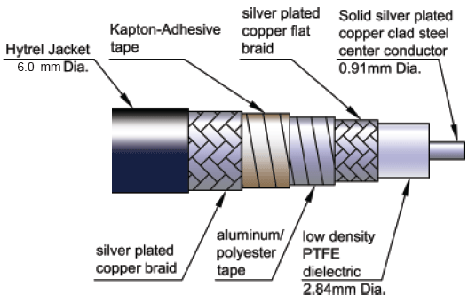
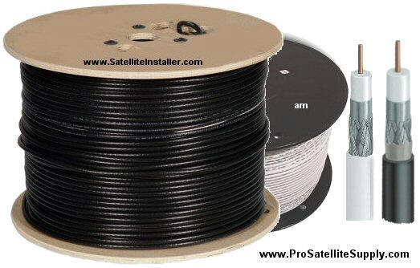

Coaxial cable is a type of electrical cable consisting of a central conductor surrounded by an insulating layer, a conductive shield, and an outer insulating jacket. It is designed to carry high-frequency signals with low loss.
Common types include RG-6 (used for cable TV and internet), RG-59 (older TV applications), and RG-58 (used in Ethernet and ham radio). The cable's structure helps prevent signal interference and crosstalk.
Applications include television broadcasting, broadband internet, radio frequency transmission, and computer networks. Advantages include good shielding against EMI, support for high bandwidth, and reliability over moderate distances. Disadvantages include higher cost than twisted pair and less flexibility for very high-speed data compared to fiber optics.

